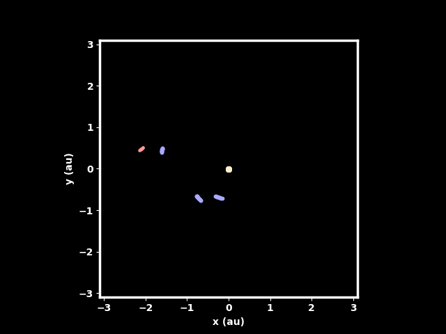
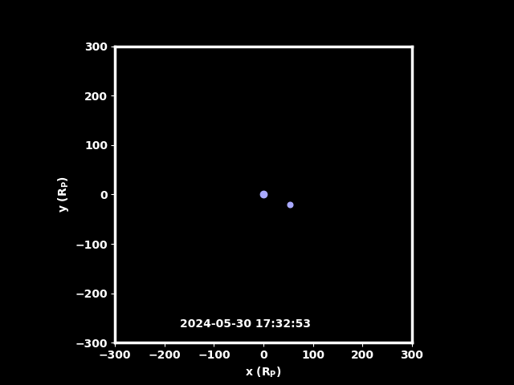
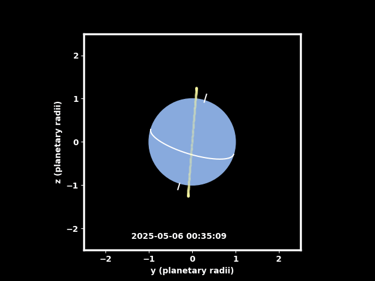
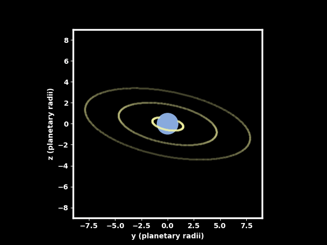

Gallery









Dr. Benj Bromley is a professor in the Department of Physics and Astronomy at the University of Utah. His research primarily focuses on planet formation, orbital dynamics, geoengineering, and astrophysical cosmology.
Dr. Bromley's research interests encompass:
Dr. Bromley teaches a range of courses in physics and astronomy, focusing on engaging students in the latest research and developments in these fields.
For a complete list of publications, please visit:




Office: 115 S 1400 E Rm 201
Email: bromley@physics.utah.edu
Phone: 801-581-8227